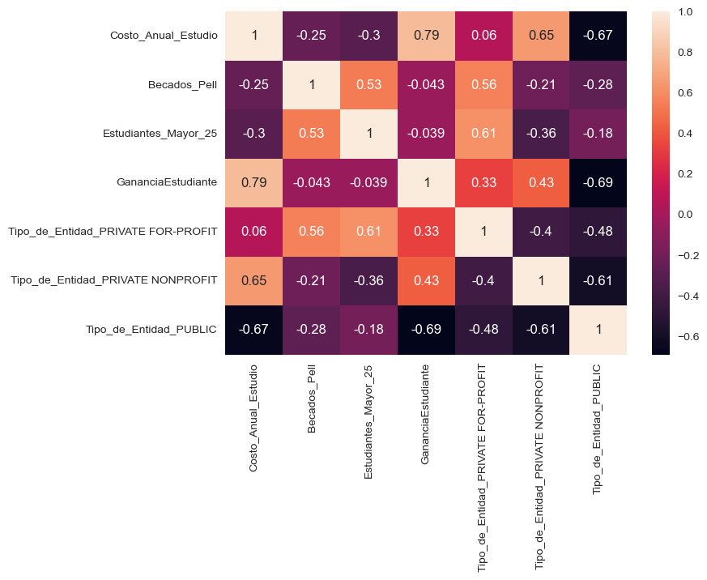
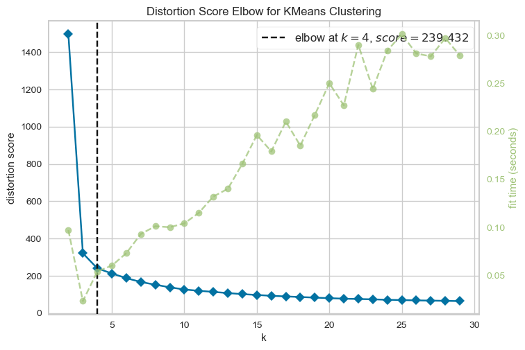
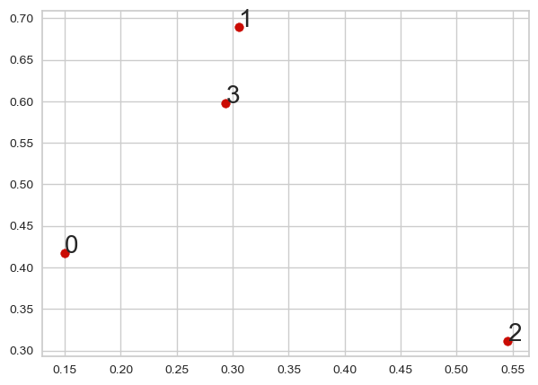
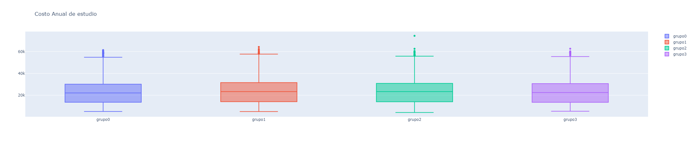

El Departamento de Educación de los Estados Unidos pone a disposición del público información para tomar mejores decisiones en la elección de instituciones de educación. Esta información se encuentra almacenada en el dataset “CollegeScorecard.csv”, publicado en el año 2016, las observaciones corresponden a la información de las diferentes instituciones educativas de dicho país y el dataset se compone de 7804 observaciones y 1725 variables. El objetivo de este proyecto es identificar dentro del dataset si existen grupos de observaciones que contengan similitud con base a las categorías con las que se van a trabajar.
Dimension de la base de datos: (7804, 1725)Para la depuración inicial de la base de datos se tomaron en cuenta las instituciones que están operando actualmente y que sean solamente presenciales. Luego seleccionamos las variables que queremos tomar en cuenta en nuestro estudio:
Luego, se procedió a revisar los valores nulos de las variables seleccionadas y se eliminaron los valores nulos debido a que no tienen una gran representación en la base de datos.
PUBLIC 1584
PRIVATE NONPROFIT 1259
PRIVATE FOR-PROFIT 904
Name: Tipo_de_Entidad, dtype: int64Se normaliza la base de datos convirtiendo las variables categóricas en "dummies", se normalizan las variables de tipo numérica para transformarlas a escala de [0,1], y se elimina la variable "INSTNM" para poder crear el modelo de agrupamiento.
# Se visualiza el dataframe| Costo_Anual_Estudio | Becados_Pell | Estudiantes_Mayor_25 | GananciaEstudiante | Tipo_de_Entidad_PRIVATE FOR-PROFIT | Tipo_de_Entidad_PRIVATE NONPROFIT | Tipo_de_Entidad_PUBLIC | |
|---|---|---|---|---|---|---|---|
| 0 | 0.209497 | 0.7115 | 0.1049 | 0.147049 | 0 | 0 | 1 |
| 1 | 0.225169 | 0.3505 | 0.2422 | 0.146562 | 0 | 0 | 1 |
| 2 | 0.115806 | 0.6839 | 0.8540 | 0.195638 | 0 | 1 | 0 |
| 3 | 0.229663 | 0.3281 | 0.2640 | 0.135023 | 0 | 0 | 1 |
| 4 | 0.188336 | 0.8265 | 0.1270 | 0.126763 | 0 | 0 | 1 |
Se analiza el grado de correlación existente entre las variables con las que se esta trabajando.
# Se crea y se grafica la matriz de correlación
Se puede observar que la correlación mas significativa es entre las variables "Costo_Anual_Estudio" y "GananciaEstudiante" que tiene un valor de 0.79.
Para el proyecto, se utilizará el metodo K-Means. Para esto primero se utilizará el método Codo para poder identificar el número óptimo de clusters. Ya luego se procede a la creación de los clusters.
#Se analiza el número óptimo de clusters
<AxesSubplot:title={'center':'Distortion Score Elbow for KMeans Clustering'}, xlabel='k', ylabel='distortion score'>Al realizar el método del codo encontramos que el número óptimo de clusters es 4.
# Se crea el modelo usando K-Means, y se grafican sus centroides
#Se crean los grupos de acuerdo a la clasificación obtenida
#Se crea el dataframe df el cual contiene la media todas las variables por grupo
#Se visualiza el data frame df| grupo0 | grupo1 | grupo2 | grupo3 | |
|---|---|---|---|---|
| Costo_Anual_Estudio | 23987.182449 | 24699.337389 | 24683.785621 | 24284.678138 |
| Becados_Pell | 0.488891 | 0.484248 | 0.486150 | 0.474290 |
| Estudiantes_Mayor_25 | 0.362336 | 0.365876 | 0.361796 | 0.347972 |
| GananciaEstudiante | 9774.950126 | 9977.357301 | 10316.990850 | 9770.716599 |
| Tipo_de_Entidad_PRIVATE FOR-PROFIT | 0.239268 | 0.236726 | 0.254902 | 0.234818 |
| Tipo_de_Entidad_PRIVATE NONPROFIT | 0.328914 | 0.359513 | 0.329412 | 0.325911 |
| Tipo_de_Entidad_PUBLIC | 0.431818 | 0.403761 | 0.415686 | 0.439271 |
| Clasificacion | 0.000000 | 1.000000 | 2.000000 | 3.000000 |

Del análisis realizado no logramos identificar las características en especifico que hacen que una institucion educativa pertenezca a un grupo u otro, sin embargo si pudimos notar que en nuestro modelo de agrupamiento es bastante representativo, es decir, una diferencia el 0.01 entre grupos la podemos tomar como significativa. Por otro lado, realizando pruebas pudimos notar que, si dividimos el grupo en instituciones en específico ('University', 'College', 'Institution') tenemos un comportamiento similar, por lo que se decidió generar un estudio en general.
Para realizar este mismo análisis en Colombia podemos revisar la información que proporciona el ministerio de educación en la que encontramos censos en las instituciones de educación superior y contrastando información para generar agrupamientos similares que nos permitan clasificar las instituciones de eduación superior en Colombia.
https://www.datacamp.com/tutorial/k-means-clustering-r